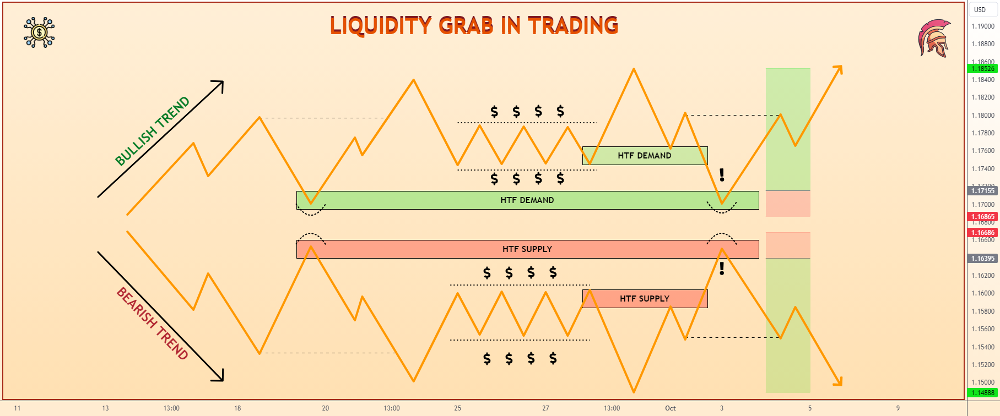
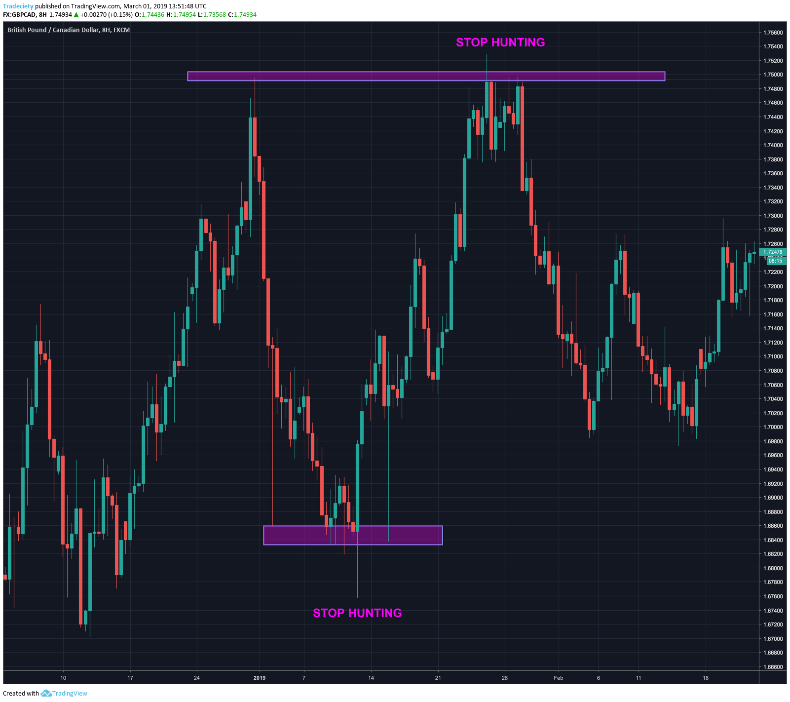
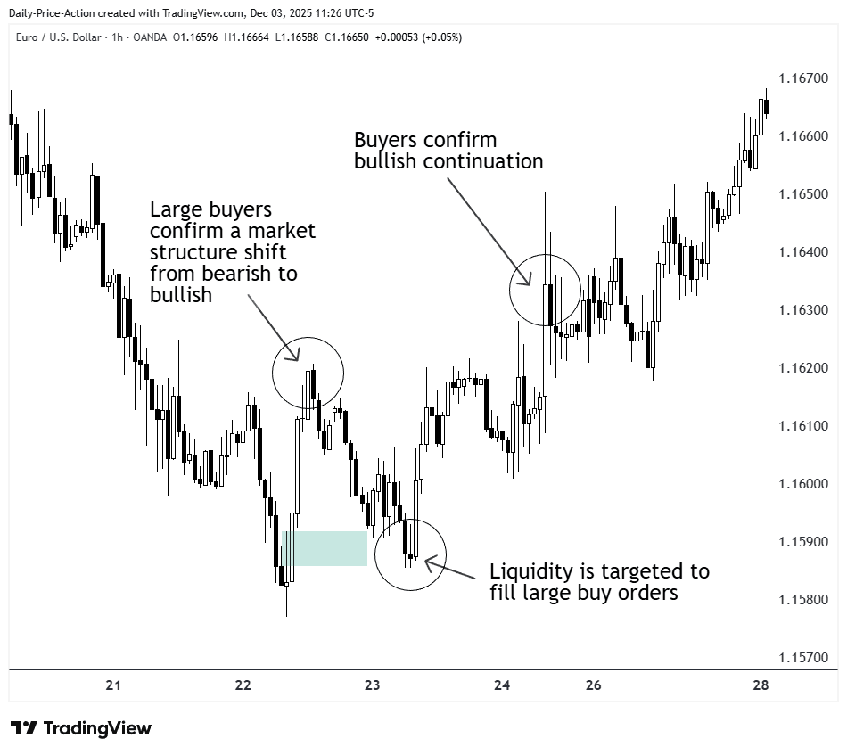
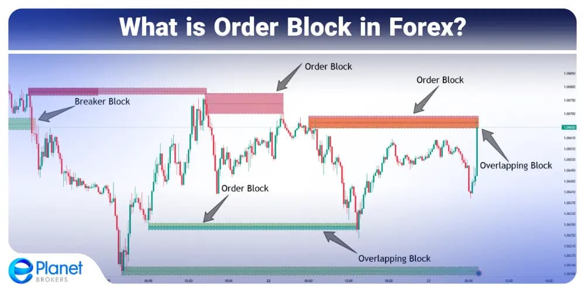
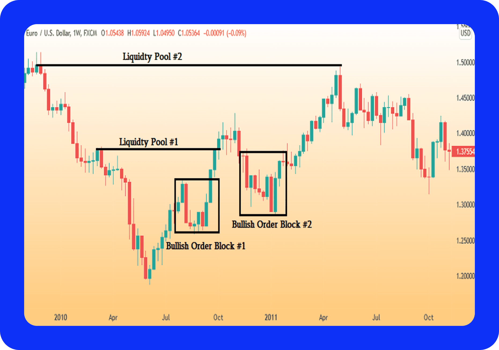

🏦 Institutional Price Action Strategy
Learn how institutions move the market — liquidity grabs, market structure shifts, order blocks, and fair value gaps.
📋 Table of Contents
📌 Strategy Overview
This strategy works best on:
- BTC / Crypto
- Nifty / BankNifty
- Forex
- High-volume stocks
Best timeframe: 15m for structure + 5m for entry
💧 Step 1 — Liquidity Grab




Markets move where liquidity exists.
Liquidity = stop losses of retail traders
Institutions push price to these areas to trigger stops.
Common liquidity zones:
- Previous High
- Previous Low
- Equal Highs
- Equal Lows
- Support / Resistance
Example:
Retail traders:
- Buy breakout above resistance
- Place stop below support
Institutions:
- Push price above resistance
- Trigger breakout buyers
- Then reverse the market
This is called a Stop Hunt.
Your job:
✔ Identify where stops are located.
🔄 Step 2 — Market Structure Shift (MSS)



After liquidity is taken, watch for structure break.
Example — Downtrend structure:
Lower High → Lower Low
Then suddenly the price breaks the last lower high.
That means: Market Structure Shift (MSS)
Now institutions are likely changing direction.
Signs of MSS:
- Strong impulse move
- Break of previous structure
- Large momentum candles
This tells you: Trend reversal may start.
🎯 Step 3 — Institutional Entry (Pullback)




After MSS, don't chase. Wait for pullback to:
- Order Block (OB) — the last opposite candle before the impulse move
- Fair Value Gap (FVG) — imbalance zone (gap between candle 1 high and candle 3 low)
- 50% retracement of the impulse move
Order Block Rules:
- Must be followed by a strong impulse move
- Must break structure
- Entry at OB zone on pullback
Fair Value Gap:
- 3-candle pattern where middle candle is very large
- Gap between candle 1 and candle 3 bodies
- Price tends to return and fill this gap
Best entry = OB + FVG overlap. This gives the highest probability.
⚡ Step 4 — Trade Execution
- Entry: At OB/FVG zone after pullback
- Stop Loss: Below/above the OB zone
- Target 1: Previous high/low
- Target 2: Next liquidity zone
- Minimum Risk-Reward: 1:3
Example (Long Trade):
Entry: ₹500 (at OB)
Stop Loss: ₹490 (below OB)
Target: ₹530
Risk: ₹10 | Reward: ₹30 | RR = 1:3
Entry: ₹500 (at OB)
Stop Loss: ₹490 (below OB)
Target: ₹530
Risk: ₹10 | Reward: ₹30 | RR = 1:3
🔧 Step 5 — Trade Management
- Take partial profit at 1:2 RR
- Move stop loss to breakeven
- Let remaining position run to target
- Trail stop behind structure
Goal: Capture the full institutional move.
⭐ Full Trade Checklist
- Identify liquidity zone (previous high/low)
- Wait for liquidity grab (stop hunt)
- Confirm Market Structure Shift (MSS)
- Mark Order Block and/or Fair Value Gap
- Wait for pullback to OB/FVG zone
- Enter with defined stop loss
- Minimum RR = 1:3
- Manage trade — partial profit + trail stop
Liquidity → MSS → OB/FVG → Entry → Profit